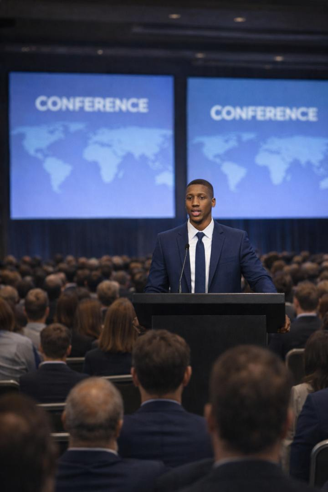

Product-ready frontends
Design and build responsive interfaces with thoughtful states, accessibility, and smooth performance.

Portfolio
Full-stack developer - Product delivery - Reliability first
I am Abubakar Gadanya, a full-stack developer based in Kano, Nigeria. I design, build, and ship responsive web applications with a focus on performance, clarity, and long-term maintainability. I take ownership of delivery, communicate early, and follow through until the product is solid.
2+ years
professional development experience
50+ projects
delivered and improved
Always on
learning, improving, and shipping

About
I believe good engineering is clear, measurable, and user-centered. My work blends product thinking with careful execution: understanding the problem, mapping the solution, and delivering a reliable experience.
Clients describe me as consistent, detail-oriented, and dependable. I do not leave projects half-finished. I fix what is broken, refine what is weak, and ship with confidence.
Engineering
I enjoy building scalable systems that solve real-world problems. My focus is on backend architecture, performance optimization, and designing systems that remain maintainable as they grow.
Research
My interests connect real-world systems to practical research. I study how data, automation, and system design can improve public services and learning outcomes.
Academics
Short, research-minded projects that emphasize methodology, measurable outcomes, and technical depth.
Work
Loading GitHub projects...
Every project links to GitHub and includes the problem, architecture, technology, technical depth, impact, and result.
Services
From concept to production, I blend product thinking with careful engineering so teams can move faster with confidence.
Design and build responsive interfaces with thoughtful states, accessibility, and smooth performance.
Integrate third-party APIs, create clean endpoints, and automate workflows that keep projects humming.
Architecture notes, usage guides, and handoff documentation that keep teams aligned.
Praise
A consistent record of delivery, steady communication, and respect for quality.
Abubakar treats every milestone like it matters. He keeps communication crisp, anticipates risks, and delivers the results we expect.
His consistency is rare. He documents, tests, and ships without compromising quality. A teammate you can trust.
He does not just code, he cares. He refines copy, tunes performance, and stays late to make sure users are satisfied.
Contact
Email me and I will respond quickly with next steps. I am based in Kano and work remotely worldwide.